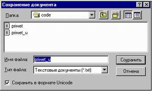
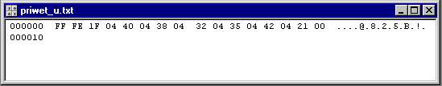

Java и Unicode ( Сергей Семихатов )
Аннотация
Как известно, Java использует представление строк в формате Unicode. В этой статье речь пойдет о способах хранения и представления данных, записанных в разных кодировках.
Java по-русски
Написать java-апплет, выводящий приветствие на русском языке очень просто. Можно вставить строку с русским языком прямо внутрь текста класса:
String labelName = "Привет!";
JLabel myLabel = new JLabel(labelName);
Однако не факт, что это будет работать. Ведь тот русский текст, который был набран в редакторе, мог существовать практически в любой кодировке (DOS/Win/UNIX). Исходный текст программы обычно представлен в 8-битном формате, а один символ (char) в java занимает 2 байта (это связано с тем, что язык java ориентирован на поддержку и на работу с Unicode). Таким образом при компиляции программы происходит преобразование символов из одной кодировки (кодировки редактора) в другую (Unicode).
Это преобразование (перекодировка) основывается на том, что исходный текст программы написан в той же кодировке, что и базовая кодировка Java Virtual Machine (JVM), которая, как правило, совпадает с кодировкой самой операционной системы (для русских Windows это будет Cp1251). Таким образом, если кодировка кириллицы в редакторе совпала с кодировкой кириллицы в системе, то сообщение ``Привет!'' появится в нормальном виде.
Чтобы избежать путаницы с кодировками русского языка в тексте программы, у компилятора javac есть специальный параметр encoding, который определяет кодировку исходного текста программы.
Есть и другой способ. Русские буквы в тексте программы можно указывать в формате `\uXXXX' (где XXXX — шестнадцатиричный код символа в стандарте Unicode). В комплект JDK входит утилита native2ascii, которая позволяет перевести текст из любой поддерживаемых JDK кодировок в ASCII-вид, а символы, не имеющие отображения в ASCII, представить в `\uXXXX' виде. Узнать код того или иного символа кириллицы в Unicode можно, запустив программу charmap в WindowsNT.
Русский текст из внешнего источника
Как показать русский текст из внешнего источника, например файла? Текст в файле хранится, как правило, в 8-битном формате. Для чтения/записи и преобразования набора байт в строку и обратно используются специальные классы из пакета java.io: InputStreamReader и OutputStreamReader.
Эти два класса специально предназначены для преобразования потока байт в указанной кодировке (чем по умолчанию является кодировка системы) в Unicode строку java.
Вот типичный пример создания ``читателя'' из файла:
FileInputStream fis =
new FileInputStream("priwet.txt");
InputStreamReader isr =
new InputStreamReader(fis, "Cp1251");
Reader in = new BufferedReader(isr);
Unicode и Java
Предположим, однако, что необходимо работать с внешним текстом (или данными) не только в русской, а в любой кодировке. Эту проблему можно решить двумя способами: храня внешние данные в формате Unicode или же в формате MBCS (MultiByte Character Set).
MBCS
Несмотря на то, что Unicode был специально разработан для поддержки многих языков, использовать его для хранения и передачи строк в Америке и большей части Европы неэффективно, потому что для этих регионов достаточно 256, а иногда всего 128 символов. Ведь первые 128 символов Unicode (\u0000 — \u007F) совпадают с ISO-646, а первые 256 символов (\u0000 — \u007F) совпадают с ISO-8859-1. Тем самым, используется только маленький кусочек всего спектра Unicode, ведь старший байт почти всегда равен нулю.
Возникает желание по-прежнему использовать Unicode внутри программы, но хранить и передавать данные в 8-битной кодировке, преобразуя данные непосредственно перед их получением или записью. В качестве записи в 8-битной кодировке можно использовать технологию MBCS, где каждый символ может занимать несколько байт.
Вопрос заключается в том, какой набор символов (кодировку) использовать для такого преобразования. Существующие кодировки не подходили для этой цели, поэтому Unicode Consortium выработал специальные кодировки для преобразования Unicode-строк в MBCS-строки. Эти кодировки носят название Unicode Transformation Format (UTF), и существуют в двух вариантах: UTF-7 и UTF-8. Они различаются количеством бит (7 или 8), используемых для кодирования.
Кодировка UTF-7 характерна тем, что часто требует больше байтов для представления данных, чем сам Unicode. Но эта кодировка необходима, так как многие старые системы (и не только, например, MIME) используют 7-битную кодировку символов.
Кодировка UTF-8, в свою очередь, очень хорошо подходит для хранения текста, который используют ASCII символы, и символы, чей Unicode код меньше \u0800. В этом спектре лежит большинство символов, используемых в европейских (соответственно, и американских) и ближневосточных странах. Для символов, чей код больше \u07FF, UTF-8, наоборот, мало подходит, потому что эти символы расплываются до 3 байт.
Алгоритмы конвертации между Unicode и UTF-7 или UTF-8 описаны в стандарте Unicode (The Unicode Standart).
Unicode
Чтобы узнать, как будет выглядеть текстовый файл в формате Unicode, можно запустить программу notepad в WindowsNT и при сохранении текстового файла поставить галочку ``Сохранить в формате Unicode''.

Рисунок 1.
Так как каждый символ занимает 2 байта, то возникает проблема, в каком порядке они должны быть записаны. Рассмотрим строку ``Привет!''. Возможны два варианта:
04 40 04 38 04 32 04 35 04 42 04 21 00
40 04 38 04 32 04 35 04 42 04 21 04 00
Какой из вариантов является правильным? В стандарте Unicode написано, что порядок байт по умолчанию является либо big endian, либо little endian :-)
Действительно, оба порядка являются правильным, и разработчики систем сами выбирают себе один из них. Так что нечего беспокоиться, если ваша Windows NT Workstation обменивается данными с Windows NT Server — они обе используют little endian.
Однако, если ваша Windows NT Workstation обменивается данными с UNIX-сервером, который использует big endian, одна из систем должна осуществлять перекодировку. В этом случае стандарт Unicode гласит, что можно выбрать любой из следующих способов решения проблемы:
Вот как выглядит файл со строкой ``Привет!'', сохраненный в формате Unicode:

Рисунок 2.
Для чтения данных, записанных как в формате MBCS (используя кодировку UTF-8), так и в формате Unicode, можно использовать все тот же класс InputStreamReader из пакета java.io, подставляя в его конструктор различные кодировки. В описании пакета java.lang написано, что каждая реализация JVM должна поддерживать следующие кодировки:
|
US-ASCII |
семибитная ASCII, она же ISO646-US, она же основная латинская часть Unicode; |
|
ISO-8859-1 |
то же самое, что ISO-LATIN-1; |
|
UTF-8 |
8-битный Unicode Transformation Format; |
|
UTF-16BE |
16-битный Unicode Transformation Format, порядок байт big-endian; |
|
UTF-16LE |
16-битный Unicode Transformation Format, порядок байт little-endian; |
|
UTF-16 |
16-битный Unicode Transformation Format, порядок байт определяется начальными значениями (допускается любой), на выходе порядок байт big-endian. |
Для чтения файла в формате Unicode надо использовать значение "UTF-16", а для чтения файла в формате UTF-8 — использовать "UTF-8":
FileInputStream fis =
new FileInputStream("priwet_u.txt");
InputStreamReader isr =
new InputStreamReader(fis, "UTF-16");
Преобразование между строками и потоком байт
В java для преобразования потока байт (byte[]) в строку (String) и обратно, в классе String есть следующие возможности:
try {
String priwet = new String(
"\u041F"+"\u0440"+"\u0438"+
"\u0432"+"\u0435"+"\u0442"+"!");
byte[] utf8Bytes = priwet.getBytes("UTF8");
String priwet2 = new String(utf8Bytes,"UTF8");
} catch (UnsupportedEncodingException e) {
e.printStackTrace();
}